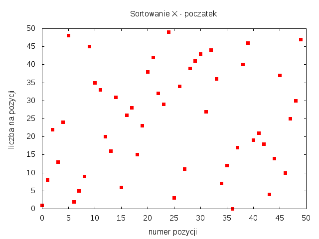
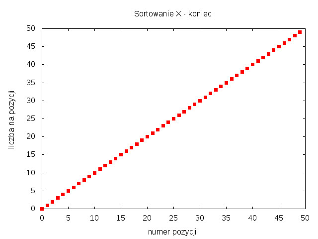

OBOWIĄZKOWE DO PRZESŁANIA: 11.1 i jedno z pozostałych
Przygotować moduł Pythona z funkcjami tworzącymi listy liczb całkowitych
do sortowania. Przydatne są m.in. następujące rodzaje danych:
(a) różne liczby int od 0 do N-1 w kolejności losowej,
(b) różne liczby int od 0 do N-1 prawie posortowane
(liczby są blisko swojej prawidłowej pozycji),
(c) różne liczby int od 0 do N-1 prawie posortowane w odwrotnej kolejności,
(d) N liczb float w kolejności losowej o rozkładzie gaussowskim,
(e) N liczb int w kolejności losowej, o wartościach powtarzających się,
należących do zbioru k elementowego (k < N, np. k*k = N).
Dla wybranego algorytmu sortowania zbadać jego zachowanie w czasie działania. Do kodu wstawić funkcję zapisującą stan listy na danym etapie sortowania. Dane można zapisywać w pliku sort1.dat. w dwóch kolumnach: numer pozycji na liście i wartość liczby na tej pozycji. Liczby w wierszu może oddzielać spacja lub tabulacja. Wtedy poglądowy rysunek można wygenerować za pomocą skryptu dla programu Gnuplot. Poniżej podane są skrypty tworzące rysunki w formatach EPS, PNG, PDF.
# Plik sort1eps.gnu set term postscript eps enhanced color 22 set output "sort1.eps" set title "Sortowanie X" set xlabel "numer pozycji" # opis osi x set ylabel "liczba na pozycji" # opis osi y unset key # bez legendy plot "sort1.dat" using 1:2 with points pt 5
# Plik sort1png.gnu set term png set output "sort1.png" set title "Sortowanie X" set xlabel "numer pozycji" # opis osi x set ylabel "liczba na pozycji" # opis osi y unset key # bez legendy plot "sort1.dat" using 1:2 with points pt 5
# Plik sort1pdf.gnu set term pdf set output "sort1.pdf" set title "Sortowanie X" set xlabel "numer pozycji" # opis osi x set ylabel "liczba na pozycji" # opis osi y unset key # bez legendy plot "sort1.dat" using 1:2 with points pt 5
# Polecenia generowania rysunku w powłoce systemu UNIX. $ gnuplot sort1eps.gnu # powstanie plik sort1.eps $ gnuplot sort1png.gnu # powstanie plik sort1.png $ gnuplot sort1pdf.gnu # powstanie plik sort1.pdf
# Generowanie rysunku z poziomu skryptu pythona.
import os
os.system("gnuplot sort1eps.gnu")
os.system("gnuplot sort1png.gnu")
os.system("gnuplot sort1pdf.gnu")
Przykładowe rysunki dla różnych liczb od 0 do 49, które przed sortowaniem są w kolejności losowej.


Poprawić wybrany algorytm sortowania, aby przyjmował jako dodatkowy argument funkcję porównującą elementy na liście [przykład na wykładzie dla funkcji bubblesort()].
Porównaj czasy działania wybranych algorytmów dla listy zawierającej N różnych liczb, przy N = 10**2, 10**3, 10**4, 10**5, 10**6.
Zaimplementować w języku Python algorytm sortowania, który nie został omówiony na wykładzie. Dołączyć krótką informację o cechach algorytmu.
Napisać iteracyjną wersję funkcji quicksort(). [trudne]
Zmienić funkcję mergesort() tak, aby przy okazji sortowania przez scalanie zliczała inwersje w sortowanej tablicy L. Inwersję tworzy para liczb na pozycjach i, j, jeżeli i < j, oraz L[i] > L[j]. Nie wolno pogorszyć wydajności sortowania O(N*log(N)). [trudne]
Napisać funkcję frequencysort(), która sortuje liczby w tablicy L zgodnie z częstością ich występowania. Jeżeli dwie liczby mają taką samą częstość występowania to o kolejności decyduje indeks pierwszego pojawienia się liczby w tablicy L. Wydajność sortowania nie powinna być gorsza niż O(N*log(N)).